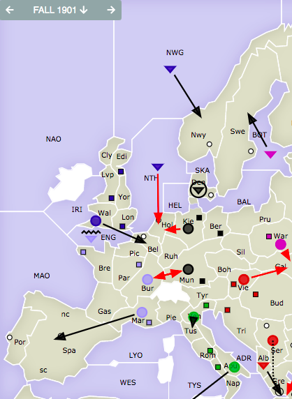
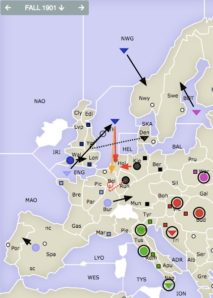

England’s classic Spring 1901 dilemma of what to do about the English Channel can be solved in a bold way: by letting France have it! England opens with the Northern Opening (by sending Edinburgh to Norwegian Sea and London to North Sea), but sends the army to Wales. France should order Brest to the English Channel, and ensure that they take Burgundy. In my research for this article, I came across an article written by Luiz L. S. Neto in Diplomacy World #147, who named this sequence “The Waterloo Opening,” which is a strange choice for an EF alliance. Instead, I will accept the Editor's suggestion of renaming it “The Yser Front Opening.” The purpose of this opening is to create tempo, similar to a Key Lepanto in which Italy loans Austria an army by moving it to Trieste in S01 and then ordering it to Serbia. In The Waterloo Opening, France loans their fleet to England in order to give England the third fleet.  Convoy to BelgiumIn this variation, English Channel convoys the army in Wales to Belgium while the North Sea moves to Holland and Burgundy attacks Munich. Both moves are guaranteed when Germany holds in Munich, but a standard German opening of Munich-Ruhr, Kiel-Denmark, and Berlin-Kiel works just as well because Burgundy threatens Munich. The power of this variation is the ability for England and France to land an army in Belgium while also bouncing Germany out of Holland. Bouncing Holland is crucial because it keeps the German army in Kiel, meaning that Germany cannot build a fleet there.  Dislodging the North SeaI have never pulled off this variation, but in theory it is sound. In this variation, France must convince Germany that the move to Burgundy was defensive, and ask for their support into the North Sea and Belgium (After all, there is nothing else for Denmark to do, and Germany likely wants France out of Burgundy). France can argue that there is no point in moving to London, because Wales will certainly block it, and that taking the North Sea will cripple England’s defense. England should still bounce Holland, but upon the retreat phase, England can retreat safely to Belgium while France obtains Munich. This leaves Germany with no builds, while England and France are both up 2. This also works if Germany moves to Belgium, in which case North Sea can retreat to the Heligoland Bight or Skagerrak. DiscussionIt took me a long time to find a willing partner to play this opening with me, probably because I was pitching this opening as France. I realized that if I was going to pitch a weird opening like this one, I would have to accept the risk associated with it. Unfortunately, I never got the opportunity to play as England until Tempest 2020, where the country draft allowed me to choose England as my country. France (Maxim Popov) and I played the convoy to Belgium variation, mostly because Jonathan Frank refused to support Maxim into the North Sea, and ended the game on a 9-9 supply center split board top. This shows that this opening can be a very powerful tool for England and France to use against Germany. It can be superior to slower attacks on Germany, because Germany is often impenetrable upon 2 builds and clever defense. On the other hand, there are some significant risks to this play. Letting France into the English Channel can be devastating if France is opportunistic, and the plan should be called off upon a French opening to Picardy that is bound to be used for a convoy onto the island. Convoying to Belgium comes with the risk that France sneaks into London, and France must be sold on the long term benefit of a solid England-France alliance. It is prudent to offer France Belgium in the long term. Another downside is that France will have a tougher time transitioning to an attack on Italy if their starting fleet moves North instead of South. This can be mitigated if the fleet in the English Channel moves back down to MAO in 1902.
If you wish to e-mail feedback on this article to the author, and clicking
on the envelope above does not work for you, feel free to use the
|